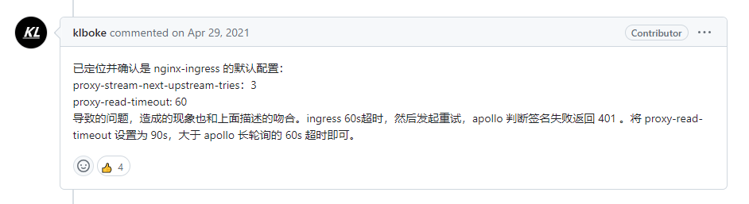

Agollo项目学习与魔改记录 Lamber
2023-08-03
前言 本篇主要记录agollo魔改心得，基于原版v4.3.1开始改写。
但试用后还是发现有些用得不太舒服的地方，决定魔改一下它~
魔改后项目路径：agollo
改动点：
首次连接Apollo服务时检查IP地址、App秘钥合法性，并同步返回连接失败原因；
修改Log接口定义，使之与其他开源库Log库更加贴合；
修复请求失败后，因为触发重试机制导致body没有释放而可能导致短暂内存泄露的问题；
支持动态新增指定namespace配置缓存，并自动监听对应namespace配置变动；
改写 GetConfigAndInit() 方法
改写 notify 包逻辑
优化针对请求 notifications/v2/ 接口因为系统架构中存在中间网络组件导致返回http-status-code=401时的处理方式（#3652 ）；
增加3个常用错误，方便业务层面处理；
修改部分变量名称及注释，使之更贴合实际意义；
1. 检验Secret合法性 1.1. 现象 使用原版客户端，填写错误的secret ，比如我使用README中的示例配置：
1 2 3 4 5 6 7 Apollo: IP: "http://apollo-configservice-dev.example.com" AppID: "example-app-id" Cluster: "dev1" NamespaceName: "application" IsBackupConfig: true Secret: "xxxxxxxxxxxxxxxxxxxxxxxxxxxx"
日志的内容非常具有迷惑性，会输出**”agollo start finished ! “**日志，让我误以为配置一切正常；
当尝试使用 Load() 方法读取远程配置时，会因为获取配置缓存失败而报错；
如果在生产环境中填错了secret，是十分危险的，应该在初始化时就把配置异常暴露出来，避免执行业务逻辑时才感知异常；
1.2. 分析 先说根本原因：
在调用 StartWithConfig() 方法时，AppConfig.MustStart 参数没有置为True ，最终没有校验secret的有效性~~！
来看下原库v4.3.1代码：
1 2 3 4 5 6 7 8 9 10 11 12 13 14 15 16 17 18 19 20 21 22 23 func StartWithConfig (loadAppConfig func () error )) (Client, error ) {if len (configs) == 0 && appConfig != nil && appConfig.MustStart {return nil , errors.New("start failed cause no config was read" )for _, apolloConfig := range configs {"init notifySyncConfigServices finished" )"agollo start finished ! " )return c, nil
可以看出这个方法内很少去处理内部错误，并将错误返回到调用方，而是直接将err吞掉 了，导致业务侧无法获得apollo-client真正初始化成功的依据；
从命名上看，下面两个方法似乎比较关键~
serverlist.InitSyncServerIPList(c.getAppConfig)
syncApolloConfig.Sync(c.getAppConfig)
先看 serverlist.InitSyncServerIPList(c.getAppConfig)
1 2 3 4 5 6 7 8 9 10 func InitSyncServerIPList (appConfig func () go component.StartRefreshConfig(&SyncServerIPListComponent{appConfig})type SyncServerIPListComponent struct {func ()
可以看出，这是一个异步任务，再往里看
1 2 3 4 5 6 7 8 9 10 11 package componenttype AbsComponent interface {func StartRefreshConfig (component AbsComponent)
这里有一个定时组件接口，内部调用 Start() 方法，那么联系上下文，就是调用了 SyncServerIPListComponent 对象的 Start() 方法
继续它看做了什么
1 2 3 4 5 6 7 8 9 10 11 12 13 14 func (s *SyncServerIPListComponent) "syncServerIpList started" )for {select {case <-t2.C:
1 2 3 4 5 6 7 8 9 10 11 12 13 14 15 16 17 18 19 20 21 func SyncServerIPList (appConfigFunc func () map [string ]*config.ServerInfo, error ) {if appConfigFunc == nil {panic ("can not find apollo config!please confirm!" )map [string ]*config.ServerInfo)return m, err
1 2 3 4 5 6 7 func (a *AppConfig) string {return fmt.Sprintf("%sservices/config?appId=%s&ip=%s" ,
通过 services/config 接口，获取Apollo服务IP列表；
结合 Apollo架构模块 ，这部分的逻辑其实是获取Apollo-Meta-Service地址，结合Eureka注册发现，实现负载均衡；
但是这里有一个坑#1270 ，会一直触发ERROR 级别日志，使得使用者会误以为底层连接出现问题，其实逻辑上并不会对配置产生影响；
再看syncApolloConfig.Sync(c.getAppConfig)
其实是调用了 syncApolloConfig.Sync()
1 2 3 4 5 6 7 8 9 10 11 12 13 func (a *syncApolloConfig) func () make ([]*config.ApolloConfig, 0 , 8 )func (namespace string ) if apolloConfig != nil {append (configs, apolloConfig)return append (configs, loadBackupConfig(appConfig.NamespaceName, appConfig)...)return configs
在 SyncWithNamespace() 方法中会调用 configfiles/json
这里看到了校验配置是否获取成功的关键代码 ：
1 2 3 4 5 6 7 8 9 if len (configs) == 0 && appConfig != nil && appConfig.MustStart { return nil , errors.New("start failed cause no config was read" )for _, apolloConfig := range configs {
因为填错了Secret，必然读不到远程配置，因为 RequestRecovery() 内部有5次重试，每次间隔2秒，因此堵塞10秒 后，
会到达 len(configs) == 0 && appConfig != nil && appConfig.MustStart 的判断逻辑；
如果 appConfig.MustStart 为false，会继续往下执行后续逻辑，此时就忽略了secret错误导致配置没有读取成功的错误。
于是就可以将 MustStart 配置项填true ，满足检测Secret合法性的需求。
1 2 3 4 5 6 7 8 9 10 11 12 13 14 15 type AppConfig struct {string `json:"appId"` string `json:"cluster"` string `json:"namespaceName"` string `json:"ip"` bool `default:"true" json:"isBackupConfig"` string `json:"backupConfigPath"` string `json:"secret"` string `json:"label"` int `json:"syncServerTimeout"` bool `default:"false"`
1.3. 魔改 因为apollo客户端作为重要的配置加载组件，在服务启动时尤为关键，应该尽快暴露首次连接失败的原因，及时排查问题；
因此想办法加上首次连接失败后马上抛出错误的机制；
变动项：
SyncServerIPList() 先同步执行一次，确保能够正常获取Meta-Service信息，保证IP配置正确；
利用 configfiles/json
上面两个步骤执行完成后，再启动异步定时更新 IPList 的任务；
1 2 3 4 5 6 7 8 9 10 11 12 13 14 15 16 17 func InitSyncServerIPList (ctx context.Context, appConfig func () error {if _, err := SyncServerIPList(ctx, appConfig); err != nil {return errif err := CheckSecretOK(ctx, appConfig); err != nil {return errgo component.StartRefreshConfig(&SyncServerIPListComponent{make (chan struct {}),return nil
CheckSecretOK() 直接调用 Request()，并判断response-http-status-code是否是401，是则直接返回错误；
1 2 3 4 5 6 7 8 9 10 11 12 13 14 15 16 17 18 19 20 21 22 23 24 25 26 27 28 29 30 31 var res *http.Responseif res != nil {defer res.Body.Close()if res == nil || err != nil {"request failed. url: %s, err: %s" , requestURL, err)return nil , continueErrswitch res.StatusCode {case http.StatusOK:case http.StatusNotModified:case http.StatusUnauthorized:case http.StatusUnauthorized:return nil , perror.ErrUnauthorizedcase http.StatusNotFound:default :"response return err. url: %s, http-status-code: %d" , requestURL, res.StatusCode)return nil , continueErr
1 2 3 4 5 6 7 8 9 10 11 12 13 14 15 16 17 18 19 20 21 22 23 24 25 26 27 func RequestRecovery (ctx context.Context, appConfig config.AppConfig, connectConfig *env.ConnectConfig, callBack *CallBack) interface {}, err error ) {for {if host == "" {return nil , err"%s%s" , host, connectConfig.URI)if err == nil {return response, nil if errors.Is(err, perror.ErrUnauthorized) ||return nil , err
2. 短暂内存泄露 2.1. 分析： 在Request()方法中，在for的代码块直接使用defer；
1 2 3 4 5 6 7 8 9 10 11 12 13 14 15 16 17 18 19 20 21 22 23 24 25 func Request (requestURL string , connectionConfig *env.ConnectConfig, callBack *CallBack) interface {}, error ) {for {if retry > retries {break var req *http.Request"GET" , requestURL, nil )var res *http.Responseif res != nil {defer res.Body.Close()
这处如果遇到反复重试的极端情况，在重试次数达到上限时，res.Body的资源才被释放，中间过程会出现资源堆积；
2.3. 魔改 将 res, err = client.Do(req) 的后续逻辑移动到一个func块中，在func块中使用defer，使res.Body能及时被回收。
3. 长轮询接口返回401 3.1. 现象 长轮询接口~60秒返回，并没有返回304，而返回了401；打印大量error日志；
3.2. 分析 #3652 这个issue中已经列举了很多种情况，我遇到的情况与klboke这位老哥相同

但ingress的配置不是说改运维就会改呀毕竟还牵扯到其他业务，所以决定魔改代码来兼容一下这种情况
3.3. 魔改 在http-status-code = 401，且是长轮询接口请求时，也走304的逻辑；
尽管这不是优雅的实现，但为了尽量不过多改动核心逻辑，先以满足需求优先。
1 2 3 4 5 6 7 8 9 10 11 12 13 14 15 16 17 18 19 20 21 22 23 24 25 case http.StatusNotModified:"config not modified, err: %v" , err)if callBack != nil && callBack.NotModifyCallBack != nil {return nil , callBack.NotModifyCallBack()return nil , nil case http.StatusUnauthorized:if strings.Contains(requestURL, "notifications/v2" ) {"config not modified, err: %v" , err)if callBack != nil && callBack.NotModifyCallBack != nil {return nil , callBack.NotModifyCallBack()return nil , nil return nil , perror.ErrUnauthorizedcase http.StatusNotFound:return nil , perror.ErrNotFound
相关Issues https://github.com/apolloconfig/apollo/issues/1270
先说现象：
services/config 接口返回的是内网域名(或IP地址)
如果使用Agollo配置时IP填写了外网IP或者不是内网域名，会导致访问 Apollo-Meta-Service 失败，反复输出ERROR日志，具有一定的迷惑性；
解析原因：
看原库v4.3.1代码：
1 2 3 4 5 6 7 8 9 10 11 12 13 14 15 16 17 18 19 20 21 22 23 24 25 26 27 28 29 30 31 32 33 34 35 func RequestRecovery (appConfig config.AppConfig, connectConfig *env.ConnectConfig, callBack *CallBack) interface {}, error ) {"%s%s" var err error var response interface {}for {if host == "" {return nil , errif err == nil {return response, nil func loadBalance (appConfig config.AppConfig) string {if !server.IsConnectDirectly(appConfig.GetHost()) {return appConfig.GetHost()if serverInfo == nil {return utils.Emptyreturn serverInfo.HomepageURL
在loadBalance 逻辑中，当直连请求失败时（使用配置中的IP作为Domain请求失败），在会server.SetDownNode() 中会设置一个再次尝试的周期(30秒)，使得下一次请求不再使用配置的IP，而用 serverInfo.HomepageURL（Apollo-Meta-Service-URL） 代替 IP ；
这时候 HomepageURL 记录的是**内网域名(或IP)**，如果Client和Apollo-Meta-Service间没有打通网络，会导致进一步失败；
在 Request(requestURL, connectConfig, callBack) 方法内部，默认有5次重试，会一直输出ERROR日志，有一定的误导性；
最后走到 **server.SetDownNode(appConfig.GetHost(), host)**，摘除这个Apollo-Meta-Service节点URL；
如果最终没有可用的Apollo-Meta-Service-URL，将直接退出循环；
等30秒后，由componet_notify.go发起的长轮询会再次使用配置中的 Host 直连Apollo-Config-Service请求。
https://github.com/apolloconfig/apollo/issues/3652
结合通过长轮询接口实现 Config Service通知客户端的实现方式 逻辑，得知ApolloConfig-Service接收到请求后会挂起，期间有配置变更则会立即响应客户端请求，否则超时后返回304错误码。
我的定位流程大致与这篇文章相似，只是我的Agollo与Apollo-Config-Service之间隔了一层k8s-ingress，过程的抓包结果比较敏感就不截取了，分析过程可以借鉴这位博主的文章：
记一次诡异的Apollo Long polling failed 401问题